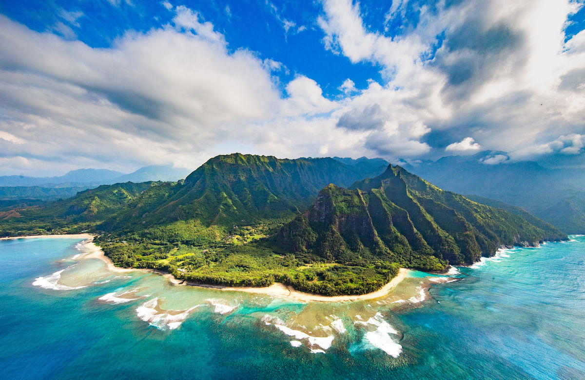

Kauai, Hawaii

If you do not want to travel all the way to Greece or Ecuador,
a closer destination might be Kauai. Kauai is known for its incredible food. There are over one hundred Hawaiian restaurants including
Porky's Kauai, JO2 Natural Cuisine and Hukilau Lanai. Aside from delicious food, there are also a variety of activities one can participate in
throughout the day. Cruises, cultural tours, and air tours are only a few of the activities offered to tourists. There is no need to worry about
finding the perfect resort because there are a ton of luxury resorts. The Grand Hyatt Kauai Resort & Spa,
the Princeville Resort and the Sheraton Kauai Resort are some of the most popular places to stay. Overall, Kauai will make for an excellent vacation.